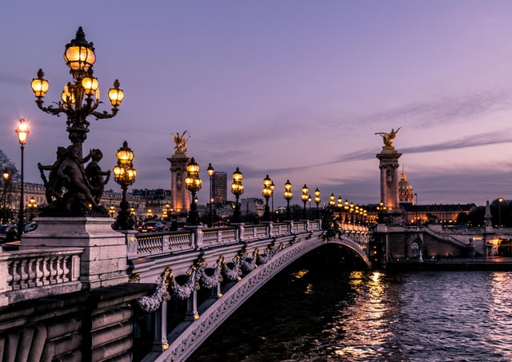

<<<<<<< HEAD

=======
>>>>>>> 4e49aab (Atualização do Projeto Final)
Paris, a cidade das luzes, dos inúmeros pontos turísticos, das calçadas movimentadas, da alta gastronomia, dos cafés, dos casais em lua de mel, das artes… Todos os clichês valem ser repetidos quando o assunto é a capital da França!